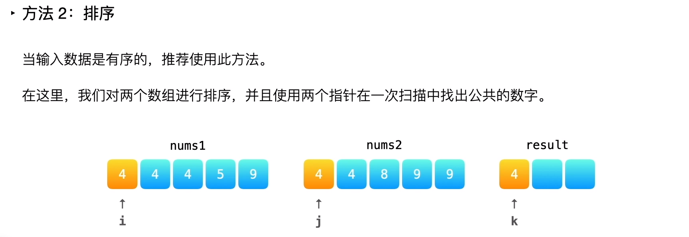

350. 两个数组的交集 II
给定两个数组，编写一个函数来计算它们的交集。示例 1：
输入：nums1 = [1,2,2,1], nums2 = [2,2]
输出：[2,2]
示例 2:
输入：nums1 = [4,9,5], nums2 = [9,4,9,8,4]
输出：[4,9]
说明：
输出结果中每个元素出现的次数，应与元素在两个数组中出现次数的最小值一致。
我们可以不考虑输出结果的顺序。
进阶：
如果给定的数组已经排好序呢？你将如何优化你的算法？
如果 nums1 的大小比 nums2 小很多，哪种方法更优？
如果 nums2 的元素存储在磁盘上，内存是有限的，并且你不能一次加载所有的元素到内存中，你该怎么办？
解法
哈希表

由于同一个数字在两个数组中都可能出现多次，因此需要用哈希表存储每个数字出现的次数。对于一个数字，其在交集中出现的次数等于该数字在两个数组中出现次数的最小值。 首先遍历第一个数组，并在哈希表中记录第一个数组中的每个数字以及对应出现的次数，然后遍历第二个数组，对于第二个数组中的每个数字，如果在哈希表中存在这个数字，则将该数字添加到答案，并减少哈希表中该数字出现的次数。 为了降低空间复杂度，首先遍历较短的数组并在哈希表中记录每个数字以及对应出现的次数，然后遍历较长的数组得到交集。
双指针
如果两个数组是有序的，则可以使用双指针的方法得到两个数组的交集。 首先对两个数组进行排序，然后使用两个指针遍历两个数组。 初始时，两个指针分别指向两个数组的头部。每次比较两个指针指向的两个数组中的数字，如果两个数字不相等，则将指向较小数字的指针右移一位，如果两个数字相等，将该数字添加到答案，并将两个指针都右移一位。当至少有一个指针超出数组范围时，遍历结束。